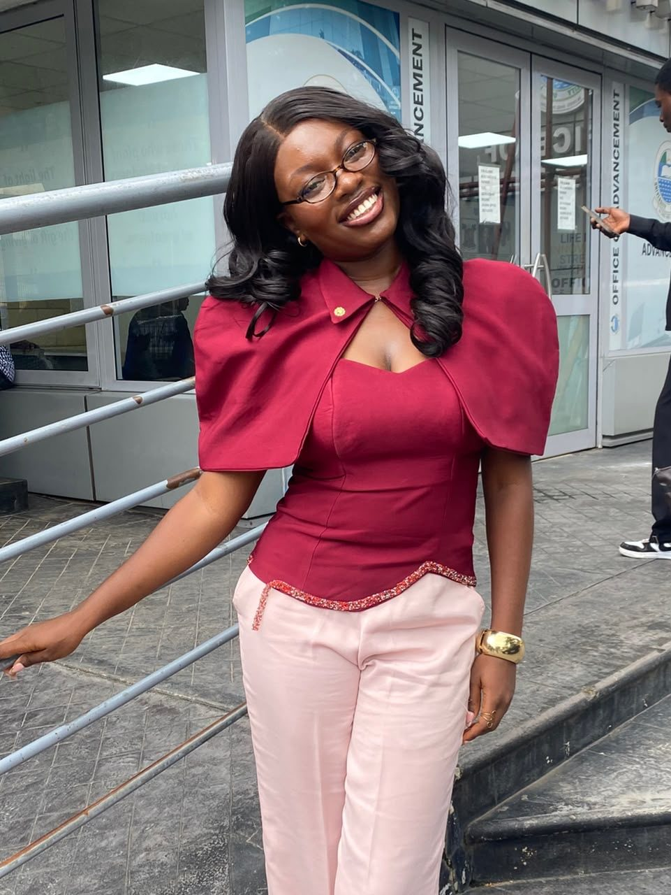
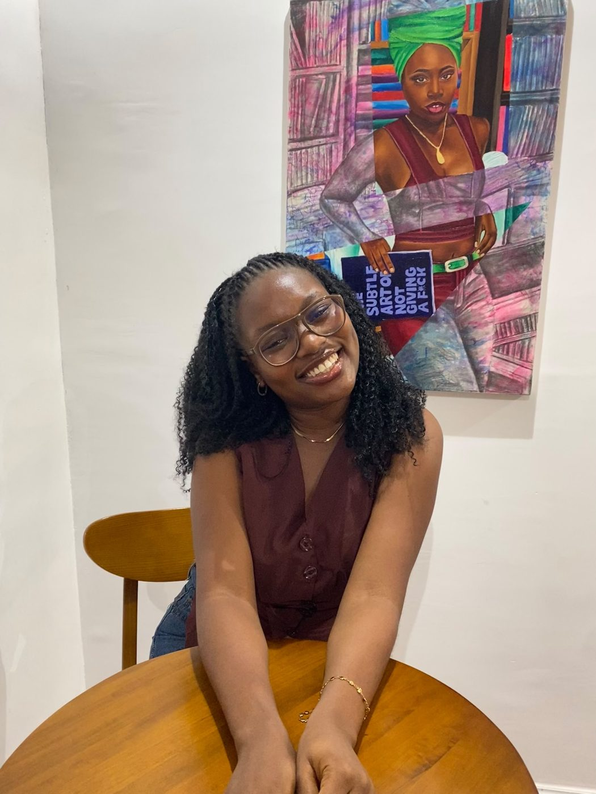

Hi, my name is
IyekoloToluwalase
Brand storytelling, communications, marketing and video editing.
About me
I'm a creative based in Lagos, Nigeria, passionate about storytelling and bringing ideas to life. I work across creative ideation, content development, visual storytelling and video production, crafting narratives that connect brands with people and communicate their messages with intention.

My mission is to help you
Bring ideas to life through creativity and storytelling, helping brands communicate their vision and build meaningful connections with their audience.
Projects I have worked on
Select a project to read what I did and the role I played.
Video content
Event coverage, creative content and interviews for different brands.
Select a video to watch it here.
Viral posts for NBG Africa
As part of the digital media team at Ragital, I contributed to content creation and event coverage for NBG Africa, producing social-first content designed to connect with audiences and drive online engagement. Select a post to open it on Instagram.
Personal brand content posts
Content creation and creative execution for the Instagram pages of people building their own personal brands.
Select a post to open it on Instagram.
Editorial and blog writing
Written editorial samples I wrote.
Select a piece to read it.
Tools I work with
The tools I use to craft your story and share it with your target audience.
Content creation
 CapCut
CapCut Canva
Canva
Publishing platforms
 TikTok
TikTok- X
Content planning
 Google Docs
Google Docs Notion
Notion Google Sheets
Google Sheets
Have a story to tell?
Tell me about your brand, your campaign or your next event. I'll get back to you.